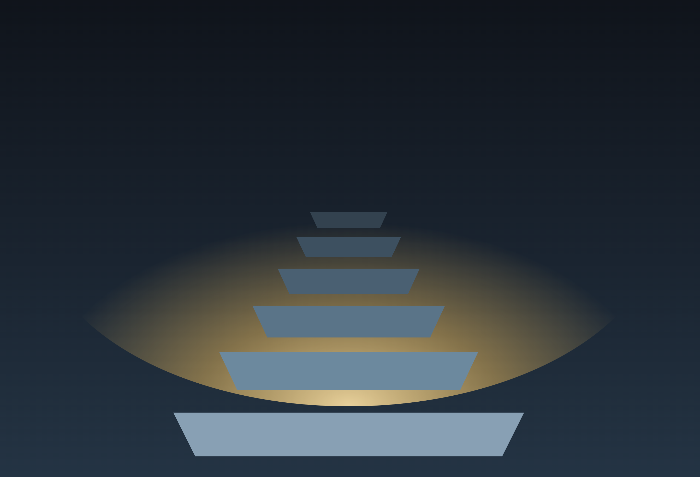

I've done this before — not by being the cleverest in the room, but by finding the right way to work. There is no clever student and no dull one; there is only the work and the system you build around it. I'm not behind. I'm at the start of the path, and I only need to see the step in front of me.